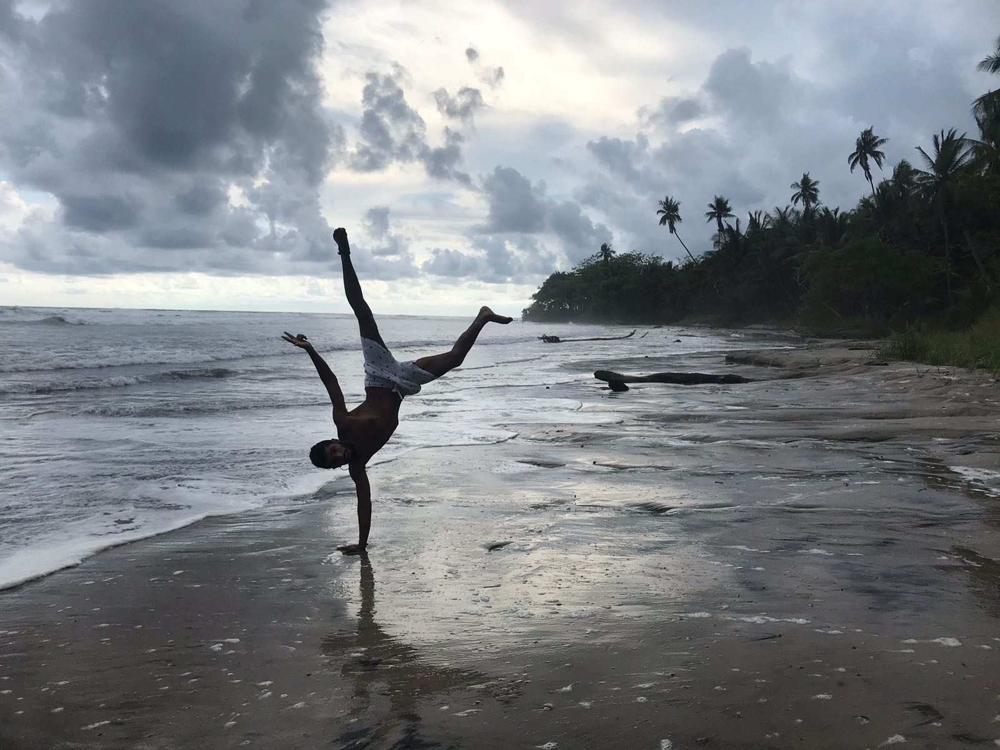
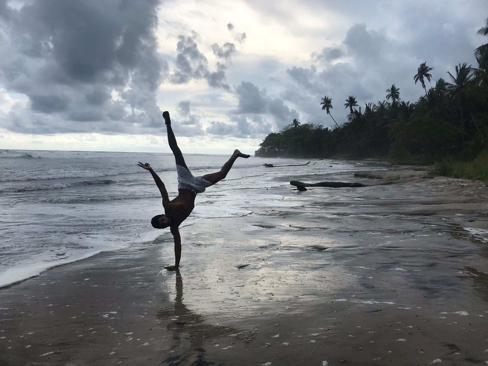

Costa Rica, a tropical country belonging to the Strip of the Land of Fire is located in the Central American region. It is bordered to the north by the state of Nicaragua and to the south by Panama, to the east by the Caribbean coast and to the west by the Pacific coast. It offers visitors a variety of attractions: from extreme activities to fascinating treks in its nature reserves. Costa Rica has beautiful beaches, active volcanoes, and of course interesting colorful culture.
Costa Rica is divided by volcanoes and mountain ranges of the Sierra Marda ridge, which stretches along the entire western part of America. In Costa Rica, there are four mountain ranges - in the north: Guanacaste and Tilaran, in the south: Central and Talamanca. There are countless volcanoes in its area, 42 of which are still active and therefore are occasionally visited by earthquakes. The highest point in the country is Mount Chirripo, which rises to a height of 3,797 meters. San Jose is the capital of Costa Rica and its largest city.

 
